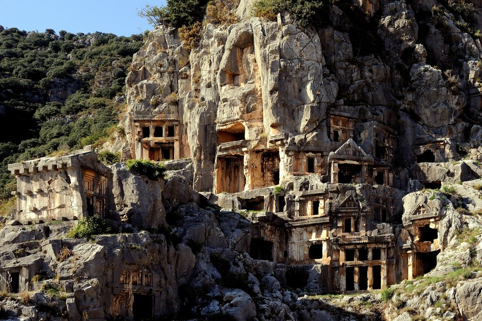

Turkey · Demre
Myra & Kekova audio guide
6 stops · 9 min · offline · plays as you arrive
The guide price is €1.99. This button is a placeholder. It does not open checkout and does not take payment. Email hello@getearwise.com.
A 6-stop offline audio guide to Myra & Kekova in Demre, recorded in 10 languages and designed to play as you arrive. It covers the painted Lycian rock tombs, St Nicholas Church, and the sunken ruins of Kekova. Download once; you will not need a signal on the ground.
Stops
- 1
The tombs of Myra
In front of the Roman theatre of Myra, below the cliff face covered in carved tombs. This is stop 1 on the route.
- 2
The Church of St Nicholas
The next story is about The Church of St Nicholas.
- 3
Andriake, the harbour of Myra
At the ruins of Andriake, by the sea at Çayağzı. This is stop 3 on the route.
- 4
Hadrian's Granary
At Andriake, in front of the long stone façade of the Roman granary facing the old harbour, the building that now houses the Museum of Lycian Civilisations. This is stop 4 on the route.
- 5
The sunken city
On the boat, alongside the northern shore of Kekova island, looking at the ruins at the water's edge. This is stop 5 on the route.
- 6
Simena and its castle
On the boat off Kaleköy, the village below the castle on the hill. This is stop 6 on the route.
On the map
All 6 stop pins for this guide are marked. Open map